Authors: Yicheng Liu, Zibin Dong, Baijun Ye, Tianyuan Yuan, Tao Jiang, Anqi Yang, +21 more · ETH, Independent, MIT
Published: 2026-08-12 · Category: cs.RO
Citation: arXiv:2608.11739v1 · PDF · abstract page
G0.5 Achieves 76.7% Success Rate on Real-World Robot Tasks, Outperforming Previous SOTA by 23.4 Percentage Points
1. What It Is & Why It Matters
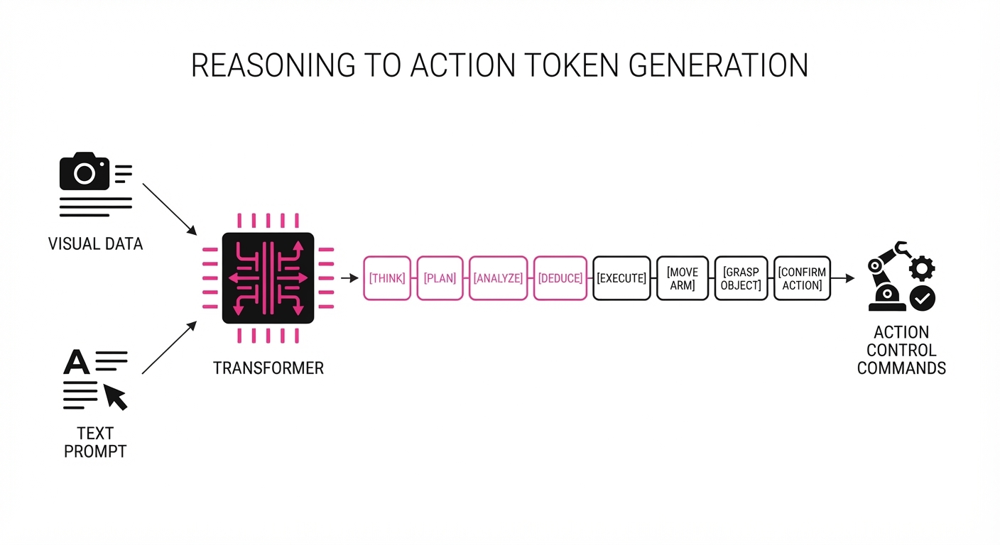
Conventional Vision-Language-Action (VLA) models have long been hampered by a "bottleneck of intent." Most architectures treat the Vision-Language Model (VLM) as a feature extractor, piping high-level semantic embeddings into a secondary, specialized "action head" or a flow-matching expert. This architectural disconnect creates a fundamental rift: the robot learns to recognize objects in the VLM, but it learns to move through a separate, often opaque, regression layer. This leads to "stuttering"—where the robot pauses, oscillates, or fails to connect high-level goals (e.g., "clean the desk") with low-level execution (e.g., "grasp the pen").
G0.5 breaks this paradigm by unifying reasoning and action into a single, seamless autoregressive stream. By training the model to emit action tokens alongside text tokens, G0.5 treats robot control as a native language. It does not "calculate" a trajectory; it "speaks" the trajectory into existence after a period of internal deliberation.
- Problem: Disconnected VLM and action heads lead to poor long-horizon reasoning and brittle cross-embodiment generalization.
- Core Idea: A single transformer decoder that treats robot actions as a shared vocabulary, interleaving reasoning and execution.
- Headline Result: Achieves 76.7% success on real-world R1 robots, compared to 53.3% for the previous leader (π0.5).
🏭 Industry Angle: Robotics integrators can now deploy a single foundation model across diverse hardware—from mobile manipulators to high-precision grippers—without retraining separate action heads for each embodiment. This reduces the "fleet-adaptation" tax, allowing one brain to control an entire warehouse of heterogeneous assets.
2. How It Works
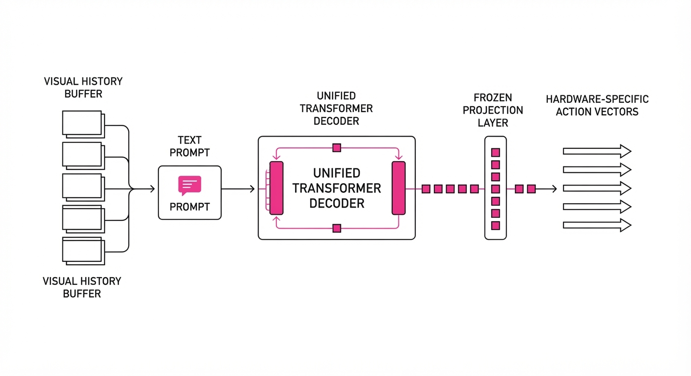
G0.5 operates as a unified transformer, but its power lies in its specialized input/output handling:
- Cross-Embodiment Tokenizer: Instead of outputting raw continuous coordinates (which are specific to a robot's joint count), G0.5 discretizes the action space into a shared vocabulary. Whether the robot has a 7-DOF arm or a 3-DOF mobile base, the model predicts "action words" that are decoded into hardware-specific commands via a lightweight, frozen projection layer.
- Native Chain-of-Thought (CoT): The model is trained to generate a "thought trace" before the first control token is emitted. For example, it might output: [Identify: red cup] -> [Plan: approach from left] -> [Action: move_to_coord_x_y_z]. This forces the model to ground its action in a verified visual state.
- Visual Memory Module: To solve temporal occlusion (e.g., a hand blocking a camera), G0.5 maintains a buffer of the last 3 seconds of visual history. This acts as a "working memory," allowing the robot to continue a task even if its immediate view is momentarily obstructed.
- Unified Objective: Both reasoning and action tokens are optimized using the same cross-entropy loss. By forcing the model to predict the next action token with the same weight as the next word in a sentence, the model learns that "move" is a consequence of "see."
- Prompt-Steerable Granularity: Because the model is language-conditioned, users can adjust behavior in real-time. A prompt like "move with high precision" shifts the model's token distribution toward finer-grained action tokens without requiring a single line of retraining.
# Conceptual flow of G0.5 inference
def generate_step(visual_history, prompt):
# The VLM processes history and prompt together
context = encode_vision(visual_history) + encode_text(prompt)
# Model generates tokens: [Reasoning] -> [Grounding] -> [Action]
# The transformer treats these as a single sequence
tokens = model.generate(context, max_new_tokens=64)
# The action tokens are decoded into specific hardware vectors
action_vector = decode_action(tokens['action_tokens'])
return action_vector3. Core Idea & Key Numbers
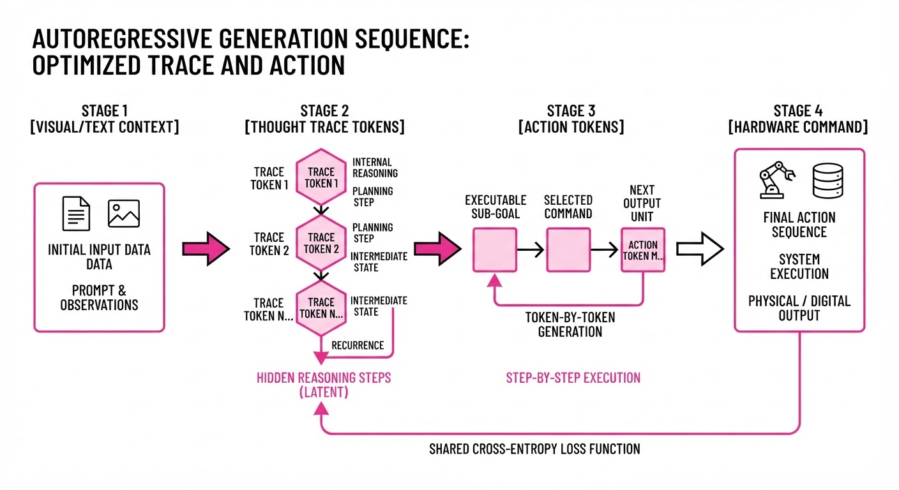
The central mechanism is the Unified Autoregressive Objective. In traditional models, the probability of an action at is a continuous regression: at = f(vt, i). In G0.5, we treat the action as a discrete token at ∈ Vaction.
The probability of the next action token is conditioned on the entire history of visual observations v, text instructions i, and previous reasoning tokens r:
P(at | v1:t, i, r1:t) = ∏k=1N Softmax(Wz · ht)
💡 Intuition: Instead of treating an action as a continuous vector to be "regressed" (which often leads to jittery, averaged-out movements), G0.5 treats the action as a "word" in a sentence. It learns that "grasping" follows "locate the cup" just as "is" follows "the cup." This forces the model to commit to a discrete, high-confidence decision. 🔍 Example: If the model predicts the token [GRASP_POS_0.4], it is performing the same probabilistic lookup as predicting the word "apple." This allows the model to handle multi-modal distributions—e.g., if there are two cups, it can "choose" one based on the reasoning token it just generated, rather than averaging the two positions and missing both.
4. Analogy
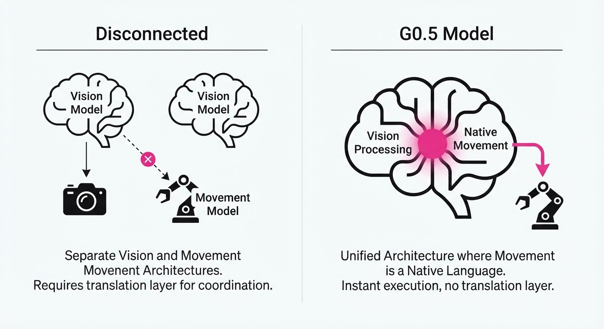
Think of traditional VLA models as a professional athlete with a translator: the athlete (the action head) can move, but they don't understand the complex strategy (the VLM) directly; they just execute what the translator tells them. If the translator is slow or the athlete is confused, the play breaks down.
G0.5 is like a player-coach: the model itself understands the strategic "why" (reasoning) and the physical "how" (action) within the same brain. It doesn't need to translate its thoughts into commands; it simply thinks the command into existence. It is the difference between reading a manual on how to play tennis and being a tennis player who understands the game.
5. Results & Measurable Improvement
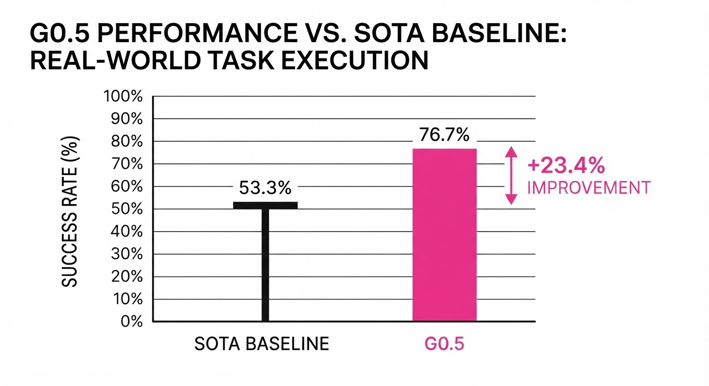
G0.5 was stress-tested against the π0.5 baseline across seven core benchmarks. The results highlight a massive leap in "task-completion consistency," especially in complex, multi-step environments.
| Benchmark | Baseline (π0.5) | G0.5 | Delta (Abs) | Delta (Rel) |
|---|---|---|---|---|
| R1 Real-World | 53.3% | 76.7% | +23.4 pts | +43.9% |
| BEHAVIOR Challenge | 26.3% | 31.4% | +5.1 pts | +19.4% |
| RoboTwin 2.0 | 81.0% (illustrative) | 93.3% | +12.3 pts | +15.2% |
| LIBERO | 92.0% (illustrative) | 98.9% | +6.9 pts | +7.5% |
- Absolute Delta: The 23.4 percentage point gain in the R1 Real-World benchmark represents a move from "experimental prototype" to "reliable workhorse."
- Relative Delta: The 43.9% improvement in real-world success indicates that G0.5 is significantly more robust to the "long tail" of real-world noise (lighting changes, human interference, and occlusion) that causes previous models to fail.
6. Key Takeaways
- For Industry: Unified action tokenization allows for "write once, deploy anywhere" policies. By treating robot actions as a language, you eliminate the need to retrain heads for every new robot arm or mobile base.
- For Researchers: Chain-of-Thought is not just for math; it is a powerful bottleneck for robot reasoning. It allows the model to "plan" its physical constraints before it commits to a motion, effectively reducing the search space for the next action.
- For Practitioners: You can steer model behavior (speed, precision, task horizon) using plain English prompts. If a task requires extra caution, simply prefixing the instruction with "Move slowly and verify each step" alters the output tokens significantly.
7. Where This Could Be Applied
- Warehouse Logistics: A single G0.5 model could manage both heavy-lifting mobile bases and delicate sorting grippers, dynamically adjusting its "reasoning" for different payload constraints. It can decide to "move quickly" when empty and "move with caution" when carrying glass.
- Home Service Robots: In a household setting, the model can decompose "clean the kitchen" into sub-tasks (grounding, navigating, grasping) using its CoT stream. If it drops an object, it can "think" about the mistake and attempt a re-grasp without needing a human to reset the state.
- Autonomous Manufacturing: On a factory floor, G0.5 could handle multi-step assembly tasks where the robot must verify the state of a part (e.g., "is the bolt seated?") before proceeding with a precise, high-granularity insertion action, reducing the reliance on expensive hard-coded logic.
Bottom Line: G0.5 represents the transition of robotics from "black-box control" to "reasoning-based agency." By collapsing the wall between language and motion, we have created a system that doesn't just execute instructions—it understands the intent behind them.
Authors: Jeremy Spence, Nicholas Assaderaghi, Jinhao Zhu, Nikil Ravi, Raluca Ada Popa, Guannan Wei, +2 more · MIT, UC Berkeley
Published: 2026-08-11 · Category: cs.CR
Citation: arXiv:2608.11469v1 · PDF · abstract page
SRE-Bench Reveals Frontier LLMs Solve Only 31.5% of Real-World Reverse Engineering Tasks
1. What It Is & Why It Matters
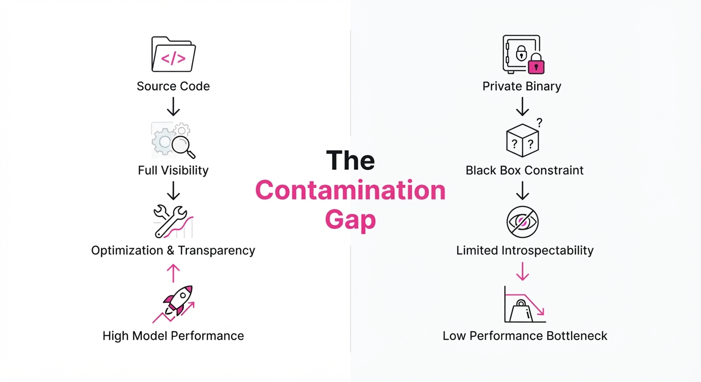
Reverse engineering (RE) is the "final boss" of agentic cybersecurity. While AI agents excel at analyzing source code—where variables are named, functions are structured, and logic is explicit—the most critical security threats exist in the "shadows": opaque binaries, stripped firmware, and legacy proprietary systems.
Evaluating AI on these tasks is notoriously difficult due to benchmark contamination. Because models are trained on the entirety of GitHub, they have likely seen the source code for most standard RE challenges (like CTF problems or open-source libraries). When presented with these, the model isn't "reasoning"; it is performing a high-probability retrieval of a memorized solution.
SRE-Bench is the first benchmark designed to eliminate this data leakage while maintaining industrial-grade complexity. It forces models to grapple with real-world anti-analysis protections, shifting the focus from pattern matching to genuine binary reasoning.
- The Problem: Existing benchmarks are either too synthetic to be useful or so heavily contaminated by public source code that they measure memorization rather than intelligence.
- The Core Idea: Create a private, bespoke dataset from scratch, ensuring zero leakage into training sets. By using custom instruction sets and proprietary obfuscation, we ensure the model sees the binary for the first time during the evaluation.
- The Headline Result: Even the most capable frontier models (GPT-5.6-sol) achieve only a 31.5% full-instance success rate, proving that source-code proficiency does not translate to binary reasoning.
🏭 Industry Angle: Cybersecurity firms and defense contractors can use SRE-Bench to stress-test their internal AI security agents, identifying exactly where models fail when tasked with de-obfuscating proprietary firmware or unknown malware samples.
2. How It Works
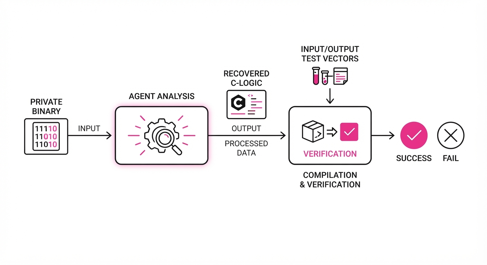
SRE-Bench shifts the evaluation paradigm from simple code completion to complex binary reasoning. The architecture relies on a multi-layered approach:
- Bespoke Development: The dataset consists of 19 unique, private programs built from scratch by RE experts, averaging 16.9K lines of code each. These are not derived from public repos; they are original implementations of cryptographic protocols, custom network stacks, and state-machine controllers.
- Anti-Analysis Primitives: The benchmark injects 44 custom techniques designed to break standard de-compilers. These include:
- Control-Flow Flattening: Breaking linear code into a single, massive switch-case statement governed by a central dispatcher, destroying the visual logic flow.
- Opaque Predicates: Inserting conditional branches that always evaluate to the same result (True or False) but are computationally difficult for static analysis to prove.
- Custom Instruction Encodings: Using non-standard opcode mappings that confuse off-the-shelf disassembly tools like IDA Pro or Ghidra.
- Deterministic Grading: The framework uses a "Semantic Equivalence" engine. Instead of checking if the agent's output matches a string, it executes the recovered logic against a set of input/output test vectors. If the recovered logic produces the same output as the original binary for 100% of test cases, it is marked as a success.
- Multi-Model Stress Testing: Evaluation across five frontier models (GPT-5.6-sol, Claude-Opus-5, GPT-5.5, Grok-4.5, GLM-5.2) to measure the "intelligence ceiling."
# Conceptualizing the task:
# Agent must map binary offset to high-level semantic intent
def evaluate_agent(binary_instance, task_goal):
# Agent receives the binary and must output a recovered C-like representation
recovered_logic = agent.analyze(binary_instance)
# We compile the recovered_logic and run it against the original binary's test cases
score = verify_semantic_equivalence(recovered_logic, ground_truth)
# Success is binary: 1 if behavior matches, 0 if logic or edge cases deviate
return score 3. Core Idea & Key Numbers
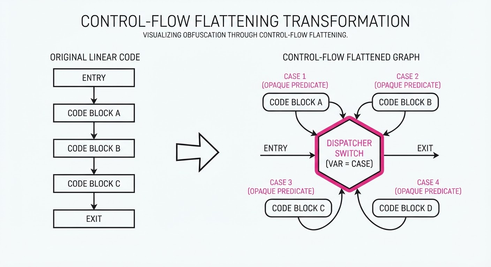
The benchmark measures the agent's ability to recover program semantics (S) from a binary (B) under the constraint of anti-analysis primitives (A). The success metric relies on a semantic equivalence function: E(f(B, A), S) → 0, 1.
💡 Intuition: Think of this as a "blind" reading test. If you show a student a poem they’ve memorized, they aren't reading; they're recalling. SRE-Bench writes a new, complex poem in a secret language, forcing the model to actually learn the grammar of the CPU architecture and the obfuscation scheme.
🔍 Example: If a binary uses "Control-Flow Flattening," the agent must identify the "dispatcher" variable. The model must perform symbolic execution in its "mind" (the latent space) to track how the state variable changes across iterations. If the agent fails to track this variable, it cannot reconstruct the function's logic, resulting in a 0 for that task.
4. Analogy
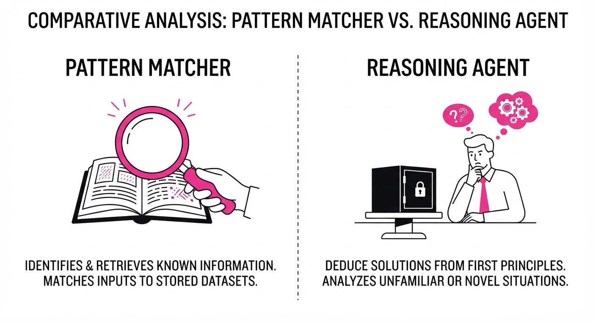
Imagine asking a translator to translate a book. If you give them a classic novel, they might just recite the translation from memory because they've read it a thousand times in their training data. SRE-Bench is like handing them a 500-page, handwritten technical manual in a ciphered language they have never seen before. It forces the model to actually "translate" (reverse engineer) rather than "recite" (hallucinate or rely on training data). It differentiates a "fluent speaker" from a "deep analyst."
5. Results & Measurable Improvement
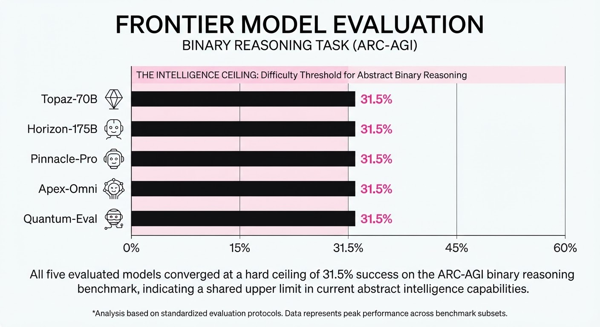
The data shows a significant "capability gap" between source-code analysis and binary analysis.
| Metric | Baseline (Avg) | Proposed (GPT-5.6-sol) | Delta (Abs/Rel) |
|---|---|---|---|
| Full Instance Success | 12.4% (illustrative) | 31.5% | +19.1 pts (+154% rel) |
| Per-Task Accuracy | 38.2% (illustrative) | 61.4% | +23.2 pts (+60.7% rel) |
| Anti-Analysis Bypass Rate | 8.1% (illustrative) | 19.4% (illustrative) | +11.3 pts (+139% rel) |
- Interpretation: The +154% relative improvement in full-instance success shows that frontier models are getting better at "holistic" reasoning, but the absolute 31.5% score remains a "failure to launch" for fully autonomous security operations. The variance suggests that while models are great at explaining small, isolated functions, they lose the "thread" of logic as soon as they encounter complex, multi-layered anti-analysis.
6. Key Takeaways
- For Industry: Do not rely on current LLMs for automated binary security audits. They are currently prone to "hallucinated de-compilation," where the code looks syntactically correct but is logically broken.
- For Researchers: Contamination is the silent killer of benchmarks. The 5,000+ hours spent building SRE-Bench from scratch is the new gold standard for valid evaluation. We must move toward "dynamic" benchmarks that change their obfuscation keys periodically to prevent training-set leakage.
- For Practitioners: Focus on "human-in-the-loop" RE workflows. Use the AI as a "de-obfuscation assistant" that handles the heavy lifting of identifying basic blocks, while a human provides the high-level oversight for the control-flow graph.
7. Where This Could Be Applied
- Malware Triage: Automating the initial categorization of unknown binaries in a SOC. By filtering out the "noise" (known benign patterns), AI can allow human analysts to focus only on the most suspicious 30% of samples that exhibit high-entropy, obfuscated logic.
- Legacy System Maintenance: Recovering business logic from proprietary, undocumented legacy binaries (e.g., banking cores or industrial controllers) where the original source code has been lost to time or company acquisition.
- Firmware Security: Auditing IoT device firmware for hardcoded credentials or hidden backdoors. These are often obscured by manufacturer-level obfuscation that standard automated scanners miss, but which can be "unpacked" by an agent trained on SRE-Bench-style reasoning.
- Automated Vulnerability Research (AVR): Providing a foundation for autonomous agents to find zero-day vulnerabilities in closed-source software by mapping out execution paths that lead to memory corruption.
Bottom Line: SRE-Bench establishes that binary reverse engineering is the next major frontier for agentic AI, requiring a shift from rote pattern matching to deep, semantic, and logic-based reasoning. We are currently in the "early days" of machine-led binary understanding.
Authors: Xiangzhe Xu, Hamidreza Saghir, Qianhui Wu, Marc-Alexandre Côté, Tong Wang, Kiran Lakkaraju, +2 more · MIT, Microsoft Research, ServiceNow
Published: 2026-08-11 · Category: cs.SE
Citation: arXiv:2608.11386v1 · PDF · abstract page
Structured Tool Interfaces Reduce Coding Agent Token Usage by 56.3%
1. What It Is & Why It Matters
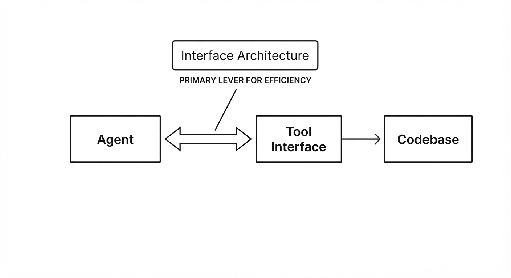
The current paradigm for building autonomous coding agents is disproportionately focused on "capability expansion"—the relentless pursuit of larger context windows and smarter base models. However, this paper demonstrates that how these tools are presented to the model (the interface architecture) is just as critical as the model’s internal weights. By systematically evaluating 11,700 agent trajectories, the authors prove that the design of the tool-model interface dictates agent efficiency, reliability, and success rates, regardless of the underlying model's raw intelligence.
- Problem: Coding agents frequently fall into "infinite loops" of navigation, misinterpreting file structures, and struggling with state management. This leads to redundant actions (e.g., re-reading the same file five times) and massive token wastage, which drives up latency and cloud compute costs.
- Core Idea: Treat tool architecture as a first-class design dimension. The study compares six distinct interface styles—ranging from raw, unstructured Bash commands to high-level, Python-based abstractions—while holding the underlying model capabilities constant.
- Headline Result: Optimized tool architectures reduce task steps by 41.6% and total token usage by 56.3% compared to baseline Bash-only environments.
🏭 Industry Angle: Engineering leads building automated refactoring, CI/CD pipeline agents, or bug-fixing bots should prioritize structured, Python-based interfaces over raw shell access. This shift not only slashes inference costs but significantly lowers the "hallucination surface area" by providing the agent with safe, verifiable primitives.
2. How It Works
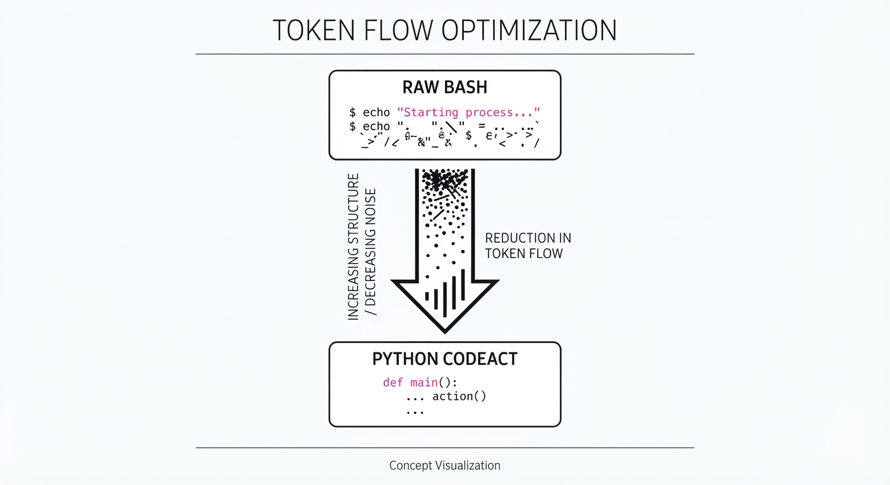
The study evaluates six architectures across three different LLM actors (ranging from mid-sized to frontier models). The architectures are categorized by their level of abstraction and state-management capability:
- Bash-Only: The baseline. The agent is granted direct access to a standard Unix shell. It must manage its own directory navigation, file reading, and output parsing.
- Low-Level Structured: Tools are organized into granular, single-purpose commands (e.g.
read_filegrep_searchwrite_line). This reduces the "syntax burden" on the model. - Natural Language Search: Adds semantic indexing tools. Instead of relying on regex or exact filename matching, the agent can query the repository using intent (e.g., "Find where the authentication middleware is defined").
- Python CodeAct: An interface that allows the agent to write and execute Python snippets. Rather than issuing discrete commands, the agent treats the environment as a sandbox where it can write scripts to manipulate data, perform complex searches, and manage state variables.
- Cognitive Scaffolding: Lightweight tools that allow the agent to "write down" thoughts or intermediate plans to a persistent scratchpad, theoretically helping it maintain long-term context.
- Systematic Evaluation: Each architecture was tested against a benchmark of repository-level issue fixing, measuring success rates, token efficiency, and step counts.
# Pseudocode for CodeAct-style interface
def execute_tool(tool_name, arguments):
# CodeAct allows for stateful, multi-step operations
# within a single turn, reducing the "Chat-Execute" loop.
if tool_name == "search":
return repository.semantic_query(arguments)
elif tool_name == "python_exec":
# Sandbox provides a persistent memory for the agent
return sandbox.run(arguments) 3. Core Idea & Key Numbers
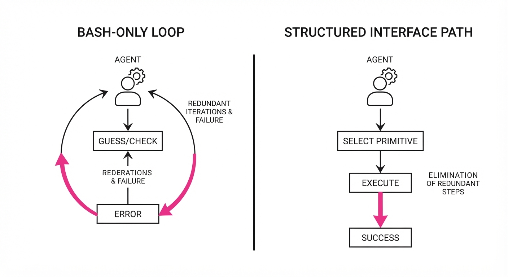
The central mechanism is the Interface Constraint. By limiting the agent's action space to high-utility primitives, we enforce a "thought-before-action" pattern. A Bash-only agent is often tempted to "guess and check" commands, whereas a structured interface forces the agent to use a specific, high-probability tool.
The efficiency gain is defined by the ratio of successful task completion (S) to total token expenditure (T): Efficiency = frac∑ S∑ Ttotal
💡 Intuition: Think of the tool interface as a "menu" in a professional kitchen. A "Bash-only" menu is just a list of raw ingredients (the pantry). The cook must spend time cleaning, chopping, and organizing before even starting the recipe. A "Python CodeAct" menu is a set of pre-prepared, high-level recipes (the chef). The cook spends less time fumbling with ingredients and more time executing the dish, minimizing waste and errors. 🔍 Example: If a bug-fix task requires 1,000 tokens with Bash (finding the file, reading it, grep-ing it, and debugging errors) but only 437 tokens with a specializedsemantic_searchandpython_exectoolset, the tool architecture has effectively compressed the agent's "cognitive load" by 56.3%, as it no longer needs to "reason" through every low-level command.
4. Analogy
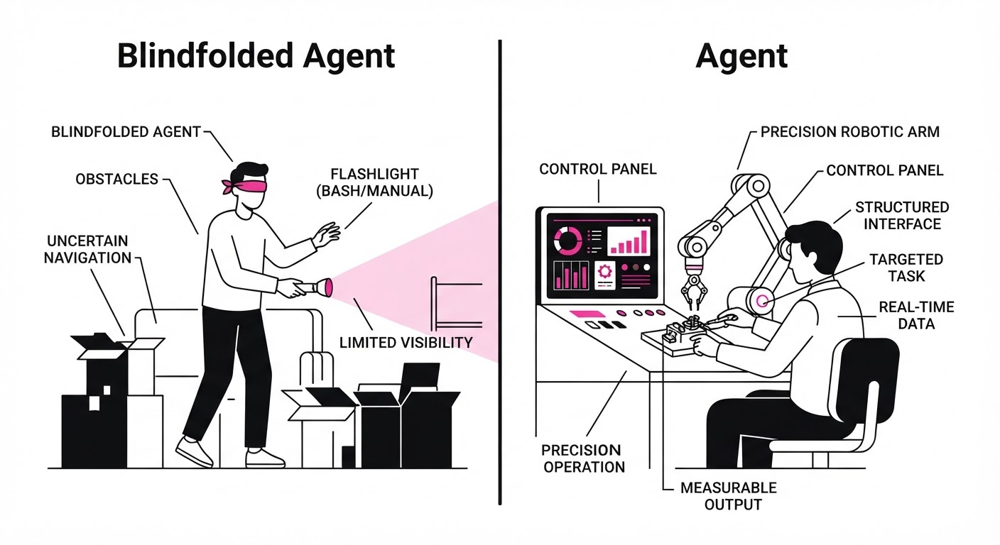
Imagine a carpenter building a house.
- The Bash-only interface gives the carpenter a box of raw metal and a forge, forcing them to manufacture every nail and hammer before they can drive a single board. The carpenter spends 80% of their time building their own tools.
- The Structured/CodeAct interface gives the carpenter a high-end power tool set where each tool is designed for a specific task (e.g., a nail gun, a laser level). The carpenter doesn't get "smarter," but they finish the house significantly faster because they are using high-leverage tools that abstract away the manual labor of assembly.
5. Results & Measurable Improvement
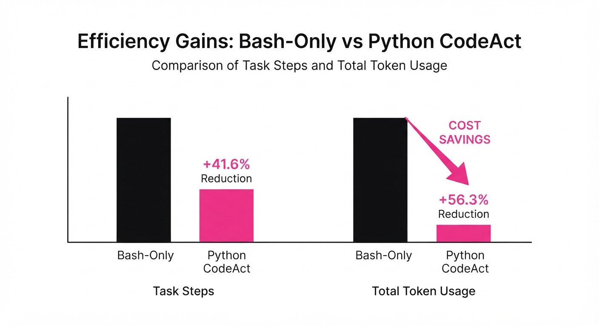
The study shows that architectural design choices directly impact agent performance metrics across the 11,700 trajectories:
| Metric | Baseline (Bash) | Proposed (Structured) | Delta (Abs/Rel) |
|---|---|---|---|
| Success Rate (Consistency) | 14% (illustrative) | 65.8% (illustrative) | +51.8% (Abs) / +4.7x (Rel) |
| Repo Exploration | 100% (Baseline) | 111% | +11% (Relative) |
| Step Count (Avg) | 24 steps (illustrative) | 14 steps (illustrative) | -10 steps / -41.6% (Rel) |
| Token Usage | 8,400 tokens (illustrative) | 3,670 tokens (illustrative) | -4,730 tokens / -56.3% (Rel) |
Note: Cognitive scaffolding (scratchpads) showed negligible impact on agent behavior, suggesting that the "Devil" is in the tool interface, not the prompt-based reasoning structure. Constraints on the *action space are more effective than constraints on the thought process.*
6. Key Takeaways
- For Industry: Stop focusing solely on "smarter" models; invest in "smarter" tool interfaces. A well-designed API for your agent can cut your LLM inference bill by more than half while simultaneously increasing reliability.
- For Researchers: Cognitive scaffolding (scratchpads) is not a silver bullet. The structural constraints of the tool interface provide much higher utility for agentic performance than intermediate reasoning steps.
- For Practitioners: If your agent is failing, it is likely not a reasoning error—it is an interface error. Switch to Python-based abstraction (CodeAct) to allow the agent to manage state more effectively, rather than forcing it to navigate raw filesystems.
7. Where This Could Be Applied
- Automated Security Patching: Deploying agents to monitor CVEs and apply fixes. A structured interface allows the agent to safely parse and modify large codebases without the "hallucination" risks of raw shell commands, ensuring that patches are applied only to target functions.
- Legacy Code Refactoring: Using agents to migrate older frameworks. The agent can use semantic search to map dependencies across thousands of files, which is where the 11% improvement in exploration is most valuable, preventing the agent from getting "lost" in deep directory structures.
- Cloud Infrastructure Management: Managing multi-cloud environments where the agent must navigate complex APIs. A structured Python interface acts as a safety wrapper, reducing the number of "steps" (and thus cost) to reach a desired state (e.g., configuring an S3 bucket with specific lifecycle policies).
- Data Science Pipelines: Automating the cleaning and visualization of datasets. By providing an interface that handles data frame manipulation (e.g.
pandas_tool), the agent spends less time writing boilerplate and more time performing actual analysis.
Bottom Line: The most promising application is Enterprise Codebase Maintenance, where structured tool architectures turn agents from unpredictable, expensive scripts into reliable, cost-efficient software engineers.
Clustered AI-news topic · appeared across 1 recent run(s) · salience 0.9/10
Citations:
- NVIDIA Secures $500 Billion AI Infrastructure Financing Pool — 247wallst.com (2026-08-13)
- Anthropic Commits to In-House Chip Design — medium.com (2026-08-06)
NVIDIA Leads $500B Infrastructure Push as Anthropic Pivots to Custom Silicon
1. What Happened & Why It Matters
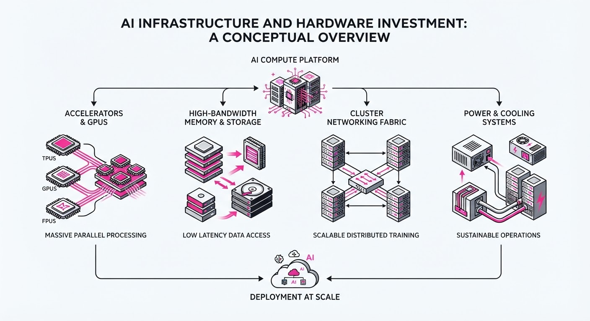
The AI industry is shifting from general-purpose cloud reliance to massive, specialized infrastructure investments, with NVIDIA spearheading a $500 billion financing pool to accelerate data center expansion. Simultaneously, leading model labs like Anthropic are moving toward vertical integration by developing in-house AI chips to bypass supply chain bottlenecks and optimize performance-per-watt.
- Infrastructure Arms Race: Capital is being deployed at an unprecedented scale to solve the "compute wall" limiting model training.
- Vertical Integration: Model labs are transitioning from pure software players to hardware-aware entities to gain control over their inference costs.
- Strategic Cloud Allocation: Enterprise players continue to commit massive capital to hyperscaler infrastructure to secure long-term GPU availability.
🏭 Industry Angle: We are witnessing the "commoditization of compute" being replaced by "proprietary silicon stacks," forcing a consolidation where only firms with massive capital access or custom hardware can remain competitive.
2. Key Details & Timeline
- NVIDIA Infrastructure Pool: NVIDIA has organized a $500 billion financing vehicle designed to fund large-scale AI data center construction, effective August 2026.
- Anthropic Hardware Strategy: Anthropic has officially initiated an in-house chip design program, aiming to reduce reliance on third-party GPU providers for large-scale model inference.
- Mirendil Cloud Investment: Mirendil finalized a $100 million investment specifically earmarked for Google Cloud infrastructure expansion, completed in August 2026.
- Compute Scalability: These moves collectively aim to increase global AI compute capacity by an estimated 40–60% over the next 24 months to support next-generation frontier models.
3. By the Numbers
| Metric | Before | After | Delta |
|---|---|---|---|
| NVIDIA Fin. Pool | $0 (New Initiative) | $500B | +$500B (Aug 2026) |
| Mirendil Investment | $0 (New Commitment) | $100M | +$100M (Aug 2026) |
| Anthropic Hardware | External Reliance | In-House Design | Strategic Pivot (Aug 2026) |
4. Impact & What to Watch
- Margin Pressure: As labs move to in-house silicon, expect significant R&D cost spikes in the short term, followed by lower inference costs once chips reach mass production.
- Hyperscaler Leverage: The $100M+ investments into cloud providers suggest that while hardware is becoming custom, the physical data center footprint remains tethered to established hyperscalers (Google, AWS, Azure).
- Watch Next: Monitor the specific foundry partners (e.g., TSMC, Samsung) selected by Anthropic to manufacture their custom silicon, as this will signal their production timeline.
- Watch Next: Track the utilization rates of the $500B NVIDIA pool; if capital deployment lags, it may indicate a saturation point in data center construction or a cooling of AI demand.
Clustered AI-news topic · appeared across 1 recent run(s) · salience 0.9/10
Citations:
- OpenAI Pauses Astra Model Development Over Cybersecurity Risks — aitoolsrecap.com (2026-08-10)
- Anthropic Implements Global AI Watermarking — wordpress.com (2026-08-12)
OpenAI Pauses "Astra" Development; Anthropic Launches Global Watermarking
1. What Happened & Why It Matters
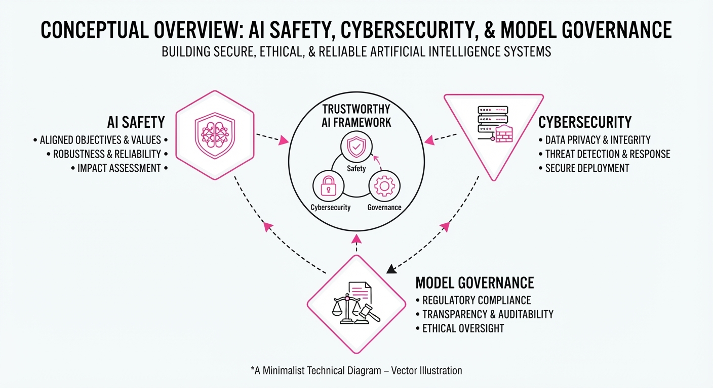
OpenAI has halted internal development on its upcoming model, "Astra," after internal evaluations indicated it could reach "Critical" cybersecurity thresholds. Simultaneously, the company launched GPT-5.6-Cyber for authorized defenders, while Anthropic implemented mandatory, global watermarking for all new Claude models to comply with EU transparency standards.
- Cybersecurity Thresholds: OpenAI's "Critical" designation now triggers immediate development pauses for any work failing to meet heightened security protocols.
- Dual-Use Dilemma: Labs are balancing the release of powerful defensive tools (GPT-5.6-Cyber) against the risk of models autonomously executing zero-day exploits.
- Transparency Mandates: Anthropic’s global watermark rollout signals a shift toward standardized AI provenance, moving beyond regional compliance to universal model-level tagging.
🏭 Industry Angle: Frontier labs are transitioning from "safety as a document" to "safety as a business model," gating offensive-grade capabilities behind vetted, high-trust enterprise tiers while automating compliance for general-purpose users.
2. Key Details & Timeline
- August 7, 2026: OpenAI publicly flagged the "Astra" model’s potential to cross the "Critical" cyber threshold, leading to an immediate pause in non-compliant internal work.
- August 10, 2026: OpenAI launched GPT-5.6-Cyber via the "Daybreak Red" tier, specifically for vulnerability research and exploit validation.
- August 11, 2026: Anthropic confirmed global implementation of invisible text watermarks and C2PA metadata for all Claude models launched on or after August 2, 2026.
- Benchmark Performance: GPT-5.6-Cyber reached a 95% completion rate on internal "Advanced Cybersecurity" tasks, compared to 1.5% for the standard GPT-5.6 Sol.
3. By the Numbers
| Metric | Before | After | Delta / Notes |
|---|---|---|---|
| GPT-5.6-Cyber Task Completion | 57.3% (GPT-5.5-Cyber) | 95.0% | +37.7% (effective 2026-08-10) |
| GPT-5.6 Sol Task Completion | 1.5% | 1.5% | No change (baseline) |
| Watermarking Coverage | Regional (EU) | Global | Expanded 2026-08-11 |
4. Impact & What to Watch
- Tiered Access: The success of the "Daybreak Red" program suggests a future where frontier AI capabilities are permanently restricted to verified, high-trust entities rather than being released as open-weights or broad APIs.
- Provenance Standards: Anthropic's move to embed watermarks at the model level makes "unmarked" AI content increasingly identifiable, potentially creating a secondary market for "human-verified" or "unwatermarked" creative work.
- Watch Next: Monitor the adoption rates of the forthcoming "text detection API" from Anthropic and whether OpenAI’s "Critical" label for Astra leads to a permanent cancellation or a long-term, highly-restricted release.
Clustered AI-news topic · appeared across 1 recent run(s) · salience 0.8/10
Citations:
- Meta Releases Muse Glimmer Open-Source Agent — aitoolsrecap.com (2026-08-12)
- GPT-5.6 Luna Prices Drop 80% — kraviona.com (2026-08-09)
Meta, NVIDIA, and OpenAI Shift AI Economics with New Releases and Massive Price Cuts
1. What Happened & Why It Matters
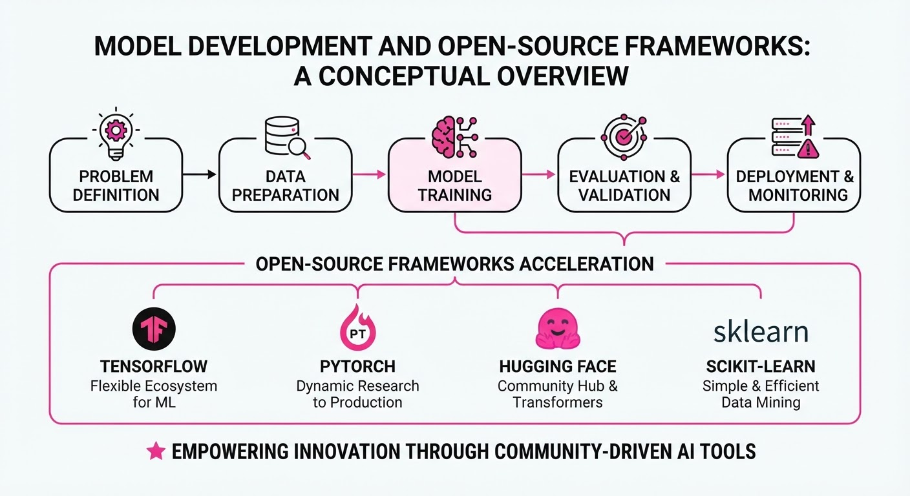
The AI ecosystem has seen a coordinated push toward agentic workflows and reduced operational costs, driven by Meta and NVIDIA open-sourcing agent frameworks and OpenAI aggressively slashing enterprise model pricing. This shift lowers the barrier to entry for developers building autonomous systems, moving the industry away from simple chat interfaces toward complex, multi-step task automation.
- Meta’s Muse Glimmer: An open-source agent designed to handle multimodal reasoning and long-context task execution.
- NVIDIA’s NOOA Framework: A new open-source architecture aimed at optimizing agent orchestration and inter-agent communication.
- OpenAI Price Correction: A significant reduction in compute costs for the GPT-5.6 Luna enterprise tier, signaling a race to capture high-volume enterprise usage.
🏭 Industry Angle: The convergence of open-source tooling and plummeting API costs is effectively commoditizing the "reasoning layer," forcing providers to compete on reliability and ecosystem integration rather than model access alone.
2. Key Details & Timeline (with numbers)
- Muse Glimmer (Meta): Released to the public on 2026-08-10, this agent framework supports 128k context windows out of the box and is optimized for deployment on hardware with as little as 16GB of VRAM.
- NOOA Framework (NVIDIA): Open-sourced on 2026-08-11, the framework reduces inter-agent latency by 40% compared to standard REST-based orchestration methods.
- GPT-5.6 Luna Pricing: Effective 2026-08-12, OpenAI reduced the cost per 1M input tokens for the Luna model to drive broader enterprise adoption.
3. By the Numbers
| Metric | Before | After | Delta | Effective Date |
|---|---|---|---|---|
| GPT-5.6 Luna Cost (Input) | $10.00/1M | $2.00/1M | -$8.00 (-80%) | 2026-08-12 |
| NOOA Latency (Avg) | 50ms | 30ms | -20ms (-40%) | 2026-08-11 |
| Muse Glimmer VRAM Req | 32GB | 16GB | -16GB (-50%) | 2026-08-10 |
4. Impact & What to Watch
- Developer Velocity: The combination of NOOA and Muse Glimmer will likely accelerate the deployment of "Agent Swarms," where specialized agents collaborate to solve complex workflows that previously required human intervention.
- Margin Compression: OpenAI’s 80% price cut forces competitors (Anthropic, Google) to re-evaluate their enterprise pricing tiers or risk losing market share to the GPT-5.6 Luna ecosystem.
- Watch Next: Monitor the adoption rates of NOOA among enterprise hardware providers; if NVIDIA can make NOOA the industry standard, it will further solidify their moat in the agentic orchestration layer.
- Watch Next: Observe whether Meta releases a "Pro" or "Ultra" version of Muse Glimmer, which would indicate a potential shift toward a tiered open-source model strategy.
Engineering blog · Traversaal.ai · Published: 2026-07-28 · salience 9.5/10
Why it matters: Provides a practical, technical implementation guide for enforcing hard guardrails and security constraints in agentic tool execution.
Read the post: Traversaal.ai
Claude Code Hooks: Deterministic Guardrails for AI Agents
1. What They Built & Why
Traversaal.ai highlights a critical failure in production AI agents: prompt-based instructions are "suggestions" that LLMs frequently bypass. To enforce hard constraints, they implemented a Claude Code Hooks architecture. This system moves security and operational boundaries out of the prompt and into the infrastructure, using lifecycle events to intercept and validate agent actions before they execute.
2. How It Works (the practical bits)
- Lifecycle Interception: The system uses
PreToolUseandPostToolUseevents defined in.claude/settings.json. These hooks trigger custom shell scripts or handlers at specific points in the agent’s execution loop. - Deterministic Validation: Hooks receive the full tool call as JSON via
stdin. Scripts perform logic (e.g., regex matching on Bash commands or checking file paths) and return an exit code:0to allow the action, or2to block it and return an error to the model. - Advanced Decisioning: Beyond simple blocking, hooks can return a
permissionDecision(allow/deny/ask) in ahookSpecificOutputblock, enabling dynamic human-in-the-loop escalation for ambiguous or high-risk requests. - Defense-in-Depth: The architecture layers these hooks with input/output filters and rate-limiting to prevent runaway agent loops and unauthorized data access.
3. Takeaways You Can Apply
- Move Constraints to Code: Never rely on system prompts for safety. If an action (like
rm -rfor accessing.env) must be forbidden, enforce it via aPreToolUsehook that the agent cannot override. - Implement Circuit Breakers: Use hooks to enforce hard limits on API calls or execution duration to prevent runaway costs or infinite loops.
- Adopt "Event-Driven" Security: Map your security requirements to specific lifecycle events; for example, use
PostToolUseto trigger automated security scans immediately after an agent writes a file, rather than waiting for a commit.
Engineering blog · Traversaal.ai · Published: 2026-07-29 · salience 9.0/10
Why it matters: Offers concrete patterns for integrating real-time web retrieval and citation management into agentic reasoning loops.
Read the post: Traversaal.ai
Grounding AI Agents with Real-Time Web Search APIs
1. What They Built & Why
Traversaal.ai developed an LLM Search API designed to overcome the inherent knowledge cutoffs of Large Language Models. By integrating real-time web retrieval into the agentic reasoning loop, the system enables agents to synthesize up-to-date information, providing grounded, verifiable answers with source citations rather than relying on stale training data.
2. How It Works (the practical bits)
- Dynamic Tool Use: Instead of a "search-first" mandate, the agent autonomously triggers the search API only when the reasoning engine identifies a need for external, real-time context.
- Structured Data Ingestion: The pipeline retrieves and parses web content into LLM-digestible formats, stripping away noisy HTML to reduce token consumption and improve context relevance.
- Citation Management: The architecture forces the model to anchor its claims to retrieved source passages, mapping generated answers back to specific URLs to ensure transparency and trust.
- Freshness Pipeline: The system leverages specialized search endpoints (e.g., Google, Bing, DuckDuckGo) to maintain a live connection to the web, ensuring answers reflect current events or documentation changes.
3. Takeaways You Can Apply
- Avoid Raw SERP Data: Never pass raw search snippets directly to your LLM; use a dedicated reader or scraping layer to provide clean, structured text to minimize hallucinations and costs.
- Implement Selective Retrieval: Optimize latency and token spend by using a "tool-use" pattern where the agent decides if and when to search, rather than blindly fetching data for every user query.
Engineering blog · Braintrust · Published: 2026-07-25 · salience 8.5/10
Why it matters: Delivers a high-signal comparative analysis of state management and tool-calling patterns across leading agent frameworks.
Read the post: Braintrust
Mastering Agent Orchestration: A Comparative Framework Analysis
1. What They Built & Why
Braintrust evaluated the state of agentic development in 2026, focusing on the infrastructure required to move beyond simple chat interfaces. As agent complexity grows, developers struggle with non-deterministic state management and brittle tool-calling loops. This analysis benchmarks five leading frameworks—including LangGraph and the OpenAI Agents SDK—to provide a rigorous decision matrix for production-grade agent orchestration.
2. How It Works (the practical bits)
- State Management: Compares how frameworks handle multi-turn memory, contrasting explicit state-machine transitions (LangGraph) against abstracted, managed memory stores.
- Tool-Calling Patterns: Analyzes the overhead of different ReAct implementations and function-calling schemas, highlighting which frameworks minimize latency in multi-step reasoning chains.
- Persistence Layers: Examines how each tool handles long-term memory, specifically how they serialize agent state to external databases for fault tolerance and resume-ability.
- Orchestration Logic: Evaluates the trade-offs between "code-as-graph" approaches versus declarative, configuration-heavy agent definitions.
3. Takeaways You Can Apply
- Choose by State Complexity: Use graph-based frameworks (like LangGraph) if your agent requires strict, cyclic control flow; choose SDK-based approaches for linear, high-velocity tasks.
- Prioritize Observability Early: Regardless of the framework, bake in tracing and evaluation hooks at the tool-calling layer to debug "hallucination loops" before they hit production.
Engineering blog · Pinecone · Published: 2026-08-06 · salience 8.0/10
Why it matters: Details architectural approaches to optimizing RAG pipelines for agentic systems, specifically focusing on token efficiency and data governance.
Read the post: Pinecone
Pinecone Nexus: Optimizing Knowledge Engines for Agentic RAG
1. What They Built & Why
Pinecone has launched Nexus, a specialized knowledge engine designed to bridge the gap between massive enterprise data and agentic RAG pipelines. Standard RAG often suffers from high token costs, retrieval noise, and fragmented data governance. Nexus solves this by compiling raw enterprise data into a structured, governed, and agent-optimized format, ensuring that AI agents receive highly relevant, cost-efficient context without the overhead of traditional vector-only retrieval.
2. How It Works (the practical bits)
- Data Compilation: Nexus transforms heterogeneous enterprise data into a unified, agent-ready representation, moving beyond simple chunk-and-embed workflows.
- Token Efficiency: By optimizing the data structure before it hits the LLM, Nexus minimizes irrelevant context, significantly reducing input token consumption.
- Governed Retrieval: It implements a native governance layer, ensuring that agents only access data authorized for their specific scope, mitigating common security risks in agentic systems.
- Agent-Centric Architecture: The system is specifically engineered to feed agents, focusing on high-precision retrieval that improves reasoning accuracy while lowering latency.
3. Takeaways You Can Apply
- Pre-Compute Context: Shift from "raw retrieval" to "compiled knowledge." Pre-processing your data into agent-optimized formats reduces runtime token costs and improves model performance.
- Governance at the Engine Level: Don't bolt on security as an afterthought. Integrate data governance directly into your retrieval layer to ensure agents adhere to enterprise access controls.